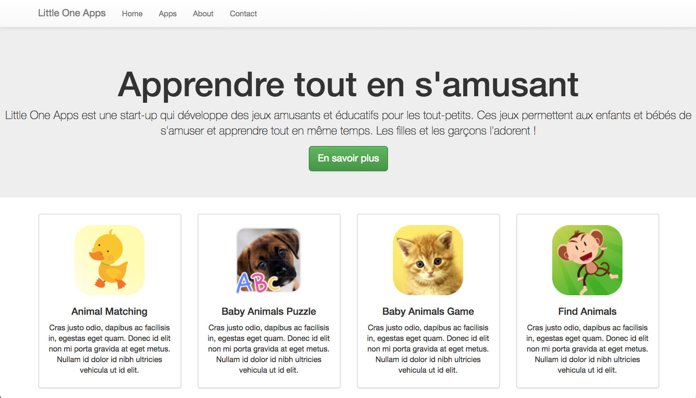

Ce document est consultable sur la plateforme Chamilo du département.
Bootstrap, initialement développé par Twitter (et maintenant par un grand nombre de contributeurs externes), est une bibliothèque sous license libre, qui fournit un ensemble d'outils facilitant le travail des développeurs web :
Dans ce TP, nous allons explorer quelques unes des possibilités offertes par Bootstrap.
<!DOCTYPE html>
<html lang="en">
<head>
<meta charset="utf-8">
<meta name="viewport" content="width=device-width,initial-scale=1">
<title>My awesome bootstrap page</title>
<!-- Bootstrap -->
<link href="bootstrap-3.3.5-dist/css/bootstrap.min.css" rel="stylesheet">
</head>
<body>
<h1>
Here, folks, shall live your code !
</h1>
<!-- jQuery (necessary for Bootstrap's JavaScript plugins) -->
<script src="https://ajax.googleapis.com/ajax/libs/jquery/1.11.3/jquery.min.js"></script>
<!-- Bootstrap's JavaScript plugins -->
<script src="bootstrap-3.3.5-dist/js/bootstrap.min.js"></script>
</body>
</html>
Vous reconnaîtrez la structure de base d'un fichier HTML. Vous remarquerez que les styles CSS sont contenus dans le fchier bootstrap.min.css. Un ensemble de scripts Javascript sont également inclus: bootstrap.min.js, et il y a également une bibliothèque JavaScript très connue : jquery.min.js
Vou noterez également que parmi les métainformations, vous trouvez:
<meta name="viewport" content="width=device-width,initial-scale=1">
En effet, Bootstrap permet de créer facilement des designs adaptatifs (dits responsive en anglais - voir le TP précédent).
Téléchargez maintenant Bootstrap et dézippez-le dans votre dossier TP7-2.
Votre répertoire est maintenant prêt à accueilir des éléments Bootstrap !
Vous avez besoin de documentation; vous pouvez accéder à:
Grâce à un ensemble intelligent de classes CSS (attributs du type class="classe1 classe2 classe3"), il est très facile de construire une grille d'éléments dynamiques, qui se positionneront les uns à côté des autres, ou les uns au-dessus des autres, en fonction de la taille de la fenêtre.
Nous allons construire ici une page contenant quatre blocs de contenu. En fonction de la taille de la fenêtre on aimerait que les blocs soient agencés ainsi :
Ordinateur de bureau :
| Bloc 1 | Bloc 2 | Bloc 3 | Bloc 4 |
Tablette :
| Bloc 1 | Bloc 2 |
| Bloc 3 | Bloc 4 |
Smartphone :
| Bloc 1 |
| Bloc 2 |
| Bloc 3 |
| Bloc 4 |
Pour ce faire, voici quelques indications :
Vous pouvez vous aider des explications du site Bootstrap Grid System et du site w3schools: Bootstrap Grids
Dans votre fichier essaibootstrap.html:
En changeant la largeur de la fenêtre de votre navigateur, vérifiez que les blocs s'agencent de la manière décrite ci-dessus.
Attention ! Si vos blocs n'ont pas tous la même hauteur, vous devrez ajouter des "retours à la ligne" (<div class="clearfix visible-sm-block"></div>), en remplaçant -sm- par la taille d'écran pour laquelle vous souhaitez insérer ce retour à la ligne. Plus d'explications sur le clearfix.
La page que nous voulons construire est la suivante:

Visualisez le fichier TP7.html avec Firefox. Puis, ouvrez TP7.html avec l'éditeur Atom pour en analyser le code. Vous remarquerez que des classes CSS Bootstrap ont été utilisées.
A quoi correspondent les classes thumbnail ? caption ? (Consultez la documentation)
Enlevez temporairement la classe thumbnail de l'une des divs et observez le résultat sur Firefox. N'oubliez pas de la rajouter !
Maintenant, nous allons créer un menu du type "navbar".
<nav class="navbar navbar-default">
<div class="container">
<div class="navbar-header">
<button type="button" class="navbar-toggle collapsed" data-toggle="collapse"
data-target="#navbar" aria-expanded="false" aria-controls="navbar">
<span class="sr-only">Toggle navigation</span>
<span class="icon-bar"></span>
<span class="icon-bar"></span>
<span class="icon-bar"></span>
</button>
<a class="navbar-brand" href="#">Little One Apps</a>
</div>
<div id="navbar" class="collapse navbar-collapse">
<ul class="nav navbar-nav">
</ul>
</div>
</div>
</nav>
Voilà, notre menu est fait ! La prochaine étape concerne la mise en forme du contenu de la page.
Trouvez la div qui est en dessous du commentaire <!-- Présentation --> et lui ajouter la classe jumbotron (documentation jumbotron). Rechargez la page et vérifiez le résultat.
Ajoutez aussi la classe text-center pour centrer le texte.
C'est déjà bien, mais on peut faire mieux ! Ajoutez les classes btn, btn-lg et btn-success au lien "En savoir plus". Vérifiez le résultat sur Firefox.
Nous avons presque fini. Voici un défi pour terminer : rajoutez de classes CSS de configuration de grille aux balises div qui sont dans la <div class="row">. Vous devez reproduire la configuration suivante.
Ordinateur de bureau :
| Bloc 1 | Bloc 2 | Bloc 3 | Bloc 4 |
Tablette :
| Bloc 1 | Bloc 2 | Bloc 3 |
| Bloc 4 |
Smartphone :
| Bloc 1 |
| Bloc 2 |
| Bloc 3 |
| Bloc 4 |
Pour ce faire, voici quelques indications :
Le design de votre page est terminé!
Nous allons maintenant voir d'autres composants pré-construits que Bootstrap propose.
Reprenez votre fichier essaibootstrap.html et dans vos blocs, ajoutez :
Un grand nombre de composants sont disponibles, voir la documentation.
Javascript est le langage de programmation qui permet d'animer les pages web : en les rendant interactives, en communiquant avec un serveur pour actualiser automatiquement le contenu (comme par exemple sur les webmails modernes), etc.
Bootstrap intègre une bibliothèqye Javascript qui permet de faire pas mal de "magie" automatiquement! Ajoutez par exemple sur votre page un modal (en plaçant son contenu à l'extérieur de votre container, et un bouton pour l'activer dans un de vos blocs). Un modal est une fenêtre qui apparait par-dessus la page pour donner une information à l'utilisateur. Pour cela, suivez la documentation qui fournit un exemple simple.
Vous pouvez encore aller plus loin avec Bootstrap: Bootstrap is the most popular HTML, CSS, and JS framework for developing responsive, mobile first projects on the web!
Faites les exercices de révision pour vous préparer à l'examen.